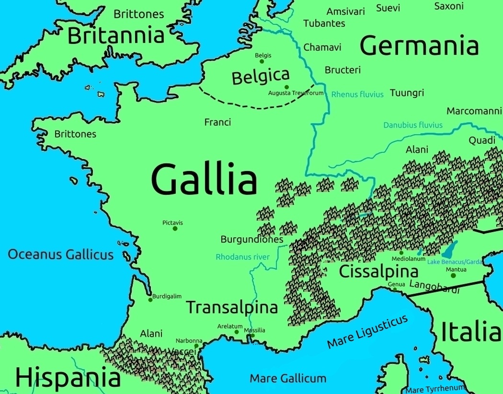

Gallia 
Gallia, English Gaul, is named after the slightly lighter color of it's people, said to be because of the many mountains and less sun in the area.
These people are known as Gauls, Galli, and before that they were also known by the Greeks as Xeones, or Seones, sometimes, when the 'X' turned into an 'S'.
One well-known group of Gauls are the Brittons, who live in the northwest and on the island of Britain, to the north, with which Gaul has often in it's history shared a close connection, especially in their rituals and sacred practices, with Celtic mages going from Gaul to Britain to study.
There are also some newer tribes. These include the Franks, named by their own duke and often valued for their blackberries, living in the northeast; The Alans, named after a river in the area of the Danube known as the Lanus river; And the Burgundians.
The Burgundians settled on the right bank of the Rhine and later crossed the river in rebellion against the Romans, however, being defeated by the Roman general Aetius, back across the river they were also defeated by the Huns also, who killed a quarter of the Burgundians. This bloody event is the likely origin of the German "Nibelungenlied" epic.